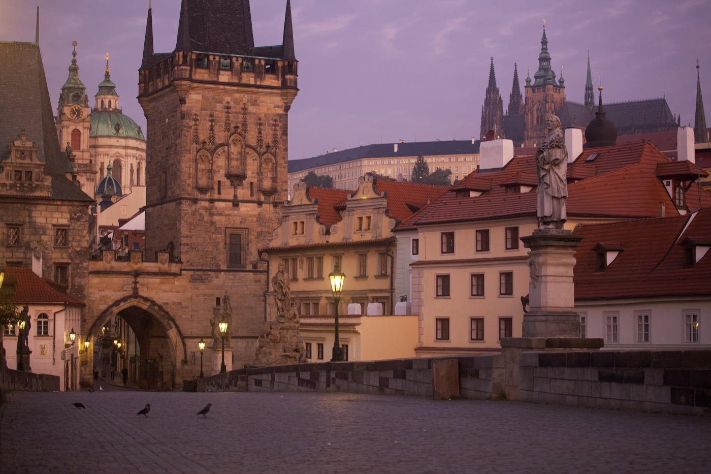
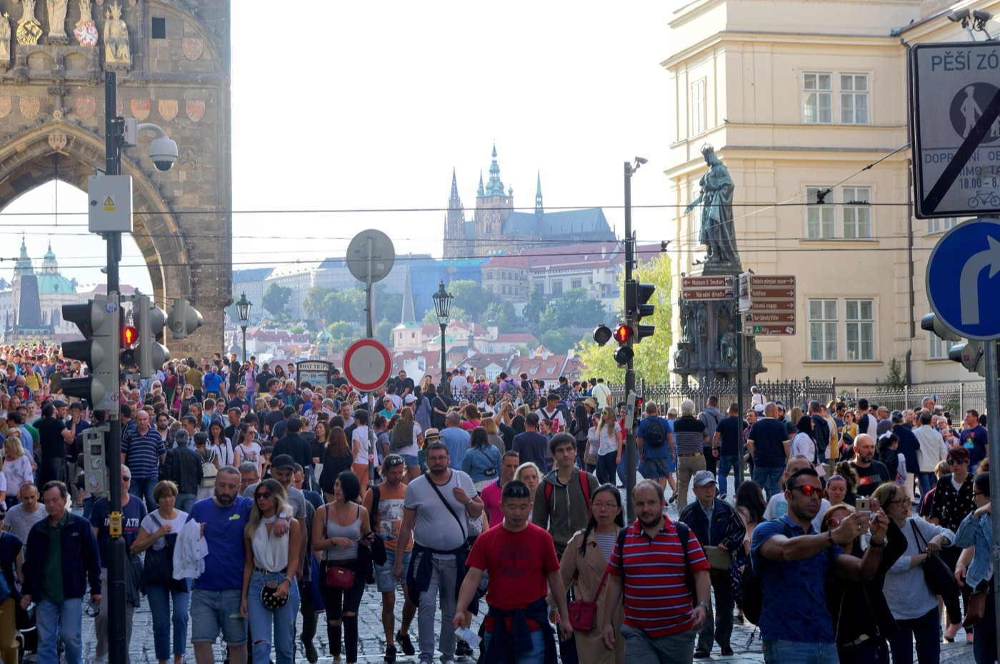

Prague · 3 days
3 Days in Prague: What You Actually Have to See
Prague's must-sees sit on one line. The Royal Route runs from the Powder Tower through Old Town Square, over Charles Bridge and up the hill to Prague Castle, and almost everyone walks it in that order, in that direction, at close to the same hour. That is why 20,000 to 30,000 people cross Charles Bridge on a busy summer day, most of them between 10am and 6pm, and why the security queue at the Castle gate runs 20 to 40 minutes from about 10:30am while it is barely a queue at all before 9am. Nothing in this city closes early or needs booking months out. The thing to plan around is the crowd, and the crowd keeps a schedule: east to west, arriving at the Castle in time for the noon changing of the guard. Three days covers everything that matters here, as long as the route is walked in reverse.

The Royal Route is a real thing and not a marketing invention. It is the coronation path Bohemian kings took to St Vitus Cathedral, and it has been the spine of the tourist city ever since: Powder Tower, Celetná, Old Town Square, Karlova, Charles Bridge, Malá Strana, up Nerudova, Castle. Two and a half kilometres, all of it worth seeing, and all of it walked by coach groups and day-trippers in that same westbound order. They set off after breakfast, reach the bridge mid-morning, and are queueing at the Castle gate by 11 so they can be in the first courtyard for the noon guard change. The effect is a wave that moves up the hill through the middle of the day and washes back down in the afternoon. Get in front of it and the same walk is a different city.
What makes reversing it possible is that the Castle is not one building with one door. The complex, its courtyards and its gardens are free and open from 6am to 10pm. Only the historical interiors are ticketed, and those open at 9am, closing at 5pm from April through October and 4pm from November through March, with last admission about half an hour before that. The ticket is valid for two consecutive days and covers one entry to each building, so a first visit that runs out of time is not a wasted ticket. Buy it online. On a summer morning the on-site ticket office adds 30 to 45 minutes to whatever the security screening already costs, and screening is fast before 9am and slow from 10:30am to 2pm, which is exactly when the organised groups are on site.
Old Town Square runs a smaller version of the same cycle, on a strict hour. The astronomical clock's apostles parade at the top of every hour from 9am to 11pm, and the whole performance lasts about 45 seconds. The square fills for roughly ten minutes beforehand and drains a few minutes after, which leaves the middle of any given hour as the usable window. One genuine closure is worth building a day around. The Jewish Museum's synagogues and the Old Jewish Cemetery shut on Saturdays and on Jewish holidays, so a Saturday in Prague has to be spent somewhere else.
The crowd is the constraint, and it walks one direction on a clock. The Royal Route runs east to west, delivering day-trippers onto Charles Bridge mid-morning and into the Castle gate queue by 11, in time for the noon guard change. Almost nothing here closes early or needs booking months ahead. Walk the route backwards, and time the Old Town to the middle of the hour, and the same sights cost a fraction of the queueing.
Day 1 — The route in reverse: Charles Bridge at first light, the Castle at opening
Be on Charles Bridge before 8am. It has no gate, no ticket and no closing time, and at that hour it holds a scattering of photographers, a few commuters and the swans. The thirty baroque statues along the parapets are copies, with the originals kept in the Lapidárium, which nobody minds much at dawn. Leave the Old Town Bridge Tower climb for later in the trip and walk west, toward Malá Strana, while the deck is still empty enough to stop on.
From the western end, Malá Strana takes about fifteen minutes to cross on foot: up Mostecká to Malostranské náměstí and the green dome of St Nicholas Church, then up Nerudova, which climbs steadily to the Castle's western gate. The eastern approach, the Old Castle Steps from Malostranská, is the alternative, and screening there tends to move faster than at the main western gate. Either way, be inside the complex by 9am, when the interiors open.
Four sites come with the standard circuit ticket: St Vitus Cathedral, the Old Royal Palace, St George's Basilica and Golden Lane. Do St Vitus first. It absorbs the largest share of every arriving group, and it is the one place where an hour's head start is visible, the nave still empty enough to stand in and look up. Golden Lane, the row of small houses built into the north wall, is the site most people find slight; it is also the one to drop if the morning runs long, because the ticket holds for a second day. By 11 the gate queues are building. The noon changing of the guard is the only one of the day with a band and the flag ceremony, runs about fifteen minutes in the first courtyard, and needs a spot claimed by around 11:45 to see properly. It is worth doing once and it is a fair thing to skip. The trade is fifteen minutes of ceremony for standing in the thickest crowd the Castle sees all day, and anyone skipping it should be walking down through the Castle gardens or into Malá Strana at that point, against the traffic still coming up.
The afternoon belongs to the lower slopes. Petřín Hill rises behind Malá Strana; its funicular has been out of service for reconstruction, with a return expected around late 2026, so check before counting on it. The walk up through the orchards takes roughly twenty minutes and ends at the same lookout tower. Kampa Island and the Lennon Wall sit a few minutes from the bridge's western end, and both work as a slow end to the day. Cross back after dark, when the bridge empties out again and the lamps are lit.
The must-sees
Everything today is timed to sit ahead of the wave coming up the hill.

Day 2 — Old Town in the middle of the hour, and the Jewish Quarter
Old Town Square is small and it has a metronome. The apostles parade at the top of every hour from 9am to 11pm, the crowd assembles about ten minutes ahead of it, and the square thins again shortly after. Watch it once, understand what it is, then plan around it. Since the performance lasts about 45 seconds and the figures read clearly from a long way back, the front row is not worth the twenty minutes it costs to hold. Everything else on the square works better in the flat part of the hour: Týn Church's twin spires, the Kinský Palace, the Jan Hus monument, and the Baroque frontages nobody looks at while the clock is chiming.
Climb the Old Town Hall tower for the view that explains the city's shape, with the square directly below, Týn's spires at eye level and the Castle ridge across the river. The tower opens at 9am from Tuesday to Sunday and at 11am on Mondays, a small detail that quietly ruins a Monday morning built around it. Josefov, the Jewish Quarter, is a ten-minute walk north.
The Jewish Museum is not a building. It is one ticket covering the Maisel, Klausen, Pinkas and Spanish Synagogues, the Ceremonial Hall, the Old Jewish Cemetery and the Robert Guttmann Gallery, spread across a few blocks and taking most of an afternoon to walk properly. Two of those are the reason to come. Pinkas Synagogue carries the names of 77,297 Jewish victims from Bohemia and Moravia, hand-written across its walls over four years. Behind it, the Old Jewish Cemetery holds more than 12,000 headstones leaning into each other on a plot the community was never allowed to extend, with burials stacked as many as twelve deep beneath them. Opening hours run 9am to 6pm from April through October and 9am to 4:30pm from November through March. The whole museum closes on Saturdays and Jewish holidays, and the separately ticketed Old-New Synagogue nearby keeps the same Sabbath closure. If the second day lands on a Saturday, swap it with day three.
Wenceslas Square closes the evening, and it is closer to a boulevard than a square: 750 metres of it running uphill to the National Museum, wide enough to have been a horse market and long enough to have held a revolution. Walk it for the shape of the thing and the history in it. Then eat somewhere else, in the Nové Město side streets off it or down by the river, because the square itself is where the tourist-priced menus live.
The must-sees
The clock sets the rhythm. Aim for the half-hour and the square is a different place.
Day 3 — Off the route entirely
The third day is the one most itineraries waste by going round again. Two days covers the Royal Route properly, and a third spent re-walking it buys three more hours in the same queues for sights already seen. Prague has an obvious second city sitting just outside the conveyor, and it starts at Vyšehrad.
Vyšehrad is the older fortress, on a bluff above the Vltava upstream of Charles Bridge and a short ride out on metro line C. The ramparts are free and open, the view back downriver is the one that shows the whole bend with the Castle on its ridge, and the cemetery beside the Basilica of St Peter and St Paul holds Dvořák, Smetana, Mucha and Čapek. On a July afternoon it is quieter than any square in the Old Town is at eight in the morning.
Walk down off the bluff to the water and follow the Náplavka embankment back north toward the centre. On a Saturday between roughly March and December the farmers' market runs along Rašínovo nábřeží from 8am to 2pm, which is the strongest argument for giving day three to a Saturday in the first place, since it is also the day Josefov is shut. The rest of the week the embankment is simply the best flat walk in the city, with bars built into the old ice vaults cut back into the wall.
Finish high on the opposite side. Letná Park sits on the plateau north of the Old Town, reached across Čechův Bridge and up a flight of stairs, and its beer garden looks straight down the line of bridges spanning the Vltava. This is the postcard view without the crowd attached to the Charles Bridge version of it. Sunset from Letná, then dinner in Holešovice, ends the trip without going near the Royal Route again.
The must-sees
A deliberate counter-programme. Nothing today is on the Royal Route.
What to book, and what just needs the right hour
| What | Booking | So |
|---|---|---|
| Prague Castle circuit ticket | Online, before arriving | The on-site office adds 30–45 minutes in summer, on top of the security screening |
| Prague Castle interiors | No slot to pick. 9am–5pm Apr–Oct, 9am–4pm Nov–Mar | Last admission about half an hour before closing; the ticket covers two consecutive days |
| Charles Bridge | No ticket, never closes | Before 8am or after dark. 20,000–30,000 people cross it between 10am and 6pm in summer |
| Changing of the guard | Free, no ticket | Noon is the version with a band and flag ceremony. Be in the first courtyard by 11:45 |
| Astronomical clock parade | Free, no ticket | Hourly on the hour, 9am–11pm, about 45 seconds. The square clears mid-hour |
| Jewish Museum, Josefov | Online or at the Maiselova reservation centre | Closed Saturdays and Jewish holidays, so a Saturday has to go somewhere else |
| Old Town Hall tower | On the door is usually fine | 9am Tuesday to Sunday, but 11am on Mondays |
| Petřín funicular | Nothing to book | Out for reconstruction, with a return expected around late 2026. Check before relying on it |
What three days does not cover
Cutting deliberately beats rushing. These need more room than this trip's shape has:
- Český Krumlov or Kutná Hora — a day trip eats the entire third day, which is the day that turns this from a Royal Route walk into a look at the city. Add a fourth day before adding a day trip.
- Terezín — the former ghetto and fortress north of the city needs half a day at minimum and sits in a completely different register to everything else on this list. It deserves its own morning, unhurried.
- The National Gallery — its collections are split across the Trade Fair Palace, the Schwarzenberg Palace and the Convent of St Agnes, none of them adjacent, and any one of the three is an afternoon this itinerary has already spent.
- A proper brewery afternoon — the beer halls are genuinely worth the time and none of them are quick, which is the problem. Prague is a compact city to see and a slow one to drink in, and three days only leaves room for one of those.
Common questions about 3 days in Prague
Is 3 days enough for Prague?
Yes, and comfortably so, provided the third day leaves the Royal Route. Two days covers Charles Bridge, Prague Castle and St Vitus, Malá Strana, Old Town Square and the astronomical clock, and the Jewish Quarter. The third is what buys Vyšehrad, the Náplavka embankment and Letná, which is where the city stops feeling like a queue. It does not stretch to a Český Krumlov or Kutná Hora day trip, or to Terezín, each of which takes a full day of its own.
What time should I go to Charles Bridge to avoid the crowds?
Before 8am, or after dark. Between roughly 10am and 6pm on a busy summer day the bridge carries somewhere between 20,000 and 30,000 people, and it is shoulder to shoulder for most of that. There is no ticket and no closing time, so the early crossing costs nothing but the alarm, and the lamps at night make the late one nearly as good.
What time is the changing of the guard at Prague Castle?
Sentries change on the hour from 7am, through to 8pm in summer and 6pm in winter, with no music or ceremony. The one worth seeing is at noon in the first courtyard, which adds the Castle Guard band's fanfare and the flag ceremony and runs about fifteen minutes. It is free, it happens daily in any weather, and a usable spot needs claiming by about 11:45.
Do I need to book Prague Castle tickets in advance?
Book online. The Castle grounds, courtyards and gardens are free and open 6am to 10pm with no ticket at all, but the historical interiors need the circuit ticket, and buying it on site in summer means 30 to 45 minutes at the ticket office before the security screening has even started. The ticket is valid for two consecutive days and allows one entry per building, so an unfinished first visit can be picked up the next day.
How long does the astronomical clock show last?
About 45 seconds. The twelve apostles rotate past the two upper windows in two groups of six, on the hour, every hour from 9am to 11pm, and a trumpeter plays a short fanfare from the tower afterwards. The crowd starts forming roughly ten minutes beforehand and disperses within a few minutes, which makes the middle of the hour the sensible time to be on Old Town Square for anything else.
What is closed on Saturdays in Prague?
The Jewish Museum in Prague closes on Saturdays and on Jewish holidays, which takes out the Maisel, Klausen, Pinkas and Spanish Synagogues, the Ceremonial Hall and the Old Jewish Cemetery in one go. The nearby Old-New Synagogue, which is ticketed separately, observes the same closure. Saturday is a good day for Vyšehrad and the Náplavka farmers' market, which runs along Rašínovo nábřeží from 8am to 2pm for most of the year.
Is Prague walkable, or do I need public transport?
The historic centre is walkable end to end, and the Royal Route from the Powder Tower to the Castle gate is about two and a half kilometres of it. The climb up to the Castle is the only real effort, and the cobbles are punishing in thin soles. Transport earns its keep for the third day: metro line C to Vyšehrad, and the trams for reaching Letná or Holešovice.
Tailored to your trip
Travelling to Prague? Plan your trip around your real arrival and departure times.
Download iOS App